Задание №3
Стереометрия
Здесь мы разберем базовые объемные фигуры: куб, параллелепипед, призму и пирамиду. Все формулы для вычисления объема и площади поверхности. Погнали! 🧊
📖 Теория
🧠 Вспомнить формулы💡 Главное правило для всех объемов
Чтобы не зубрить каждую формулу отдельно, запомни одно простое правило. Оно работает для всех фигур в стереометрии!
1. Если у фигуры ДВА основания
(Призма, Цилиндр, Куб, Параллелепипед)
\(V = S_{\text{основания}} \cdot h\)
Просто умножаем площадь основания на высоту.
2. Если у фигуры ОДНО основание
(Пирамида, Конус — сходятся в одну вершину)
\(V = \frac{1}{3} S_{\text{основания}} \cdot h\)
Умножаем на высоту и обязательно делим на 3.
1. Куб
- Объем куба: \(V = a^3\)
- Площадь поверхности: \(S_{\text{поверхности}} = 6a^2\)
- Диагональ куба: \(d = a\sqrt{3}\)
Лайфхак: У куба все 12 ребер равны, а все 6 граней — это равные квадраты.
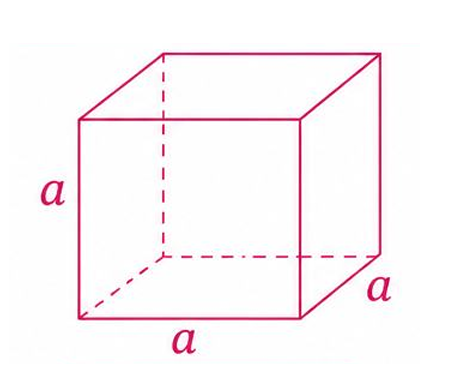
2. Прямоугольный параллелепипед
- Объем: \(V = a \cdot b \cdot h\)
- Площадь поверхности: \(S_{\text{поверхности}} = 2ab + 2bh + 2ah\)
- Диагональ: \(d = \sqrt{a^2 + b^2 + h^2}\)
Лайфхак: Все грани — прямоугольники. Противоположные грани равны.
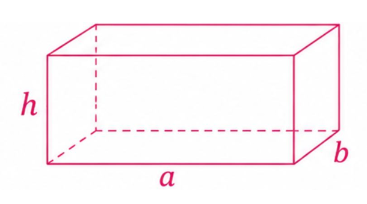
3. Призма
- Объем: \(V = S_{\text{осн}} \cdot h\)
- Площадь боковой поверхности: \(S_{\text{бок}} = P_{\text{осн}} \cdot h\)
- Площадь полной поверхности: \(S_{\text{полн}} = S_{\text{бок}} + 2S_{\text{осн}}\)
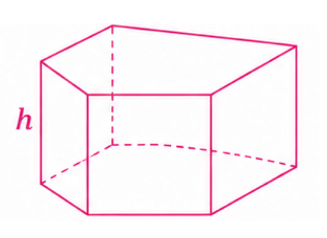
4. Пирамида
- Объем пирамиды: \(V = \frac{1}{3} S_{\text{осн}} \cdot h\)
- Площадь поверхности: \(S_{\text{поверхности}} = S_{\text{осн}} + S_{\text{бок.пов.}}\)
Лайфхак: Если пирамида правильная, площадь боковой поверхности можно найти как \(S_{\text{бок}} = \frac{1}{2} P_{\text{осн}} \cdot l\) (где \(l\) — апофема).
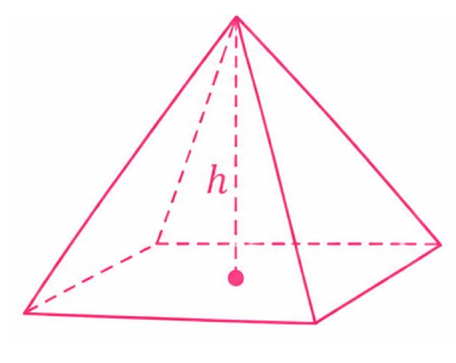
5. Конус
- Объем конуса: \(V = \frac{1}{3} \pi R^2 h\)
- Площадь поверхности: \(S_{\text{пов}} = \pi R^2 + \pi R l\)
- Площадь боковой поверхности: \(S_{\text{бок.пов.}} = \pi R l\)
Лайфхак: \(l\) (образующая) находится по теореме Пифагора: \(l = \sqrt{R^2 + h^2}\).
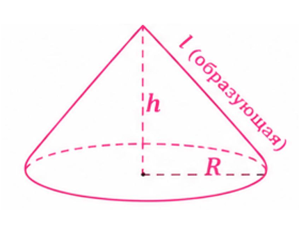
6. Цилиндр
- Объем цилиндра: \(V = \pi R^2 h\)
- Площадь поверхности: \(S_{\text{пов}} = 2\pi R^2 + 2\pi R h\)
- Площадь боковой поверхности: \(S_{\text{бок.пов.}} = 2\pi R h\)
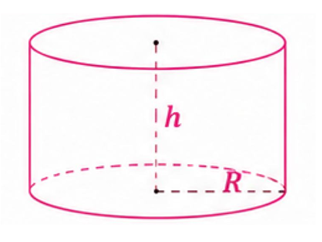
7. Шар
- Объем шара: \(V = \frac{4}{3} \pi R^3\)
- Площадь поверхности: \(S_{\text{пов}} = 4\pi R^2\)
Лайфхак: У шара нет оснований, поэтому наше «главное правило» здесь не работает. Эти две формулы нужно просто запомнить. Обрати внимание: в объеме радиус в кубе (\(\pi R^3\)), а в площади — в квадрате (\(\pi R^2\)).
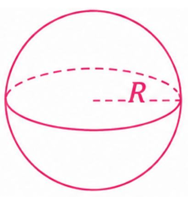
✍️ Практика: Параллелепипед и Куб
Реши задачу, введи ответ в поле и нажми «Проверить».
Задача 1
В прямоугольном параллелепипеде \(ABCDA_1B_1C_1D_1\) известно, что \(BB_1 = 16\), \(A_1B_1 = 2\), \(A_1D_1 = 8\). Найдите длину диагонали \(AC_1\).
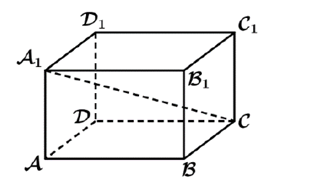
Задача 2
В прямоугольном параллелепипеде \(ABCDA_1B_1C_1D_1\) известно, что \(CC_1 = 4\), \(A_1B_1 = 1\), \(BC = 8\). Найдите длину диагонали \(DB_1\).
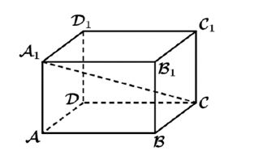
Задача 3
В прямоугольном параллелепипеде \(ABCDA_1B_1C_1D_1\) известно, что \(BB_1 = 8\), \(CD = 8\), \(AD = 14\). Найдите длину диагонали \(BD_1\).
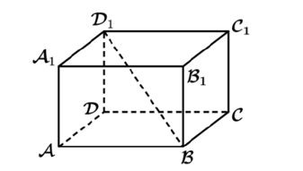
Задача 4
В прямоугольном параллелепипеде \(ABCDA_1B_1C_1D_1\) известно, что \(DD_1 = 6\), \(A_1B_1 = 12\), \(A_1D_1 = 12\). Найдите длину диагонали \(CA_1\).
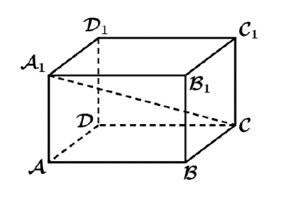
Задача 5
Диагональ куба равна \(\sqrt{3}\). Найдите его объём.
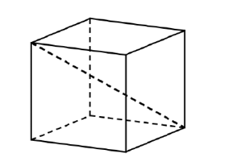
Задача 6
Диагональ куба равна \(\sqrt{48}\). Найдите его объём.
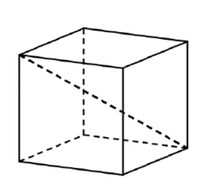
Задача 7
В прямоугольном параллелепипеде \(ABCDA_1B_1C_1D_1\) известны длины рёбер: \(AB = 11\), \(AD = 6\), \(AA_1 = 8\). Найдите площадь сечения параллелепипеда плоскостью, проходящей через точки \(A\), \(B\) и \(C_1\).
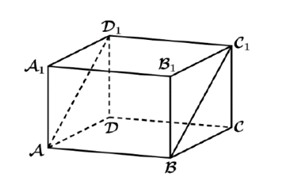
Задача 8
В прямоугольном параллелепипеде \(ABCDA_1B_1C_1D_1\) известны длины рёбер: \(AB = 3\), \(AD = 4\), \(AA_1 = 32\). Найдите площадь сечения, проходящего через вершины \(C\), \(C_1\) и \(A\).
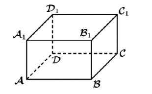
Задача 9
В прямоугольном параллелепипеде \(ABCDA_1B_1C_1D_1\) известны длины рёбер: \(AB = 15\), \(AD = 8\), \(AA_1 = 21\). Найдите площадь сечения, проходящего через вершины \(B\), \(B_1\) и \(D\).
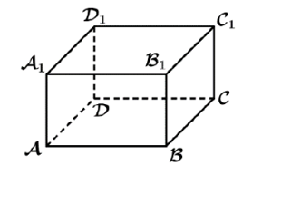
Задача 10
Найдите площадь поверхности многогранника, изображённого на рисунке (все двугранные углы — прямые).
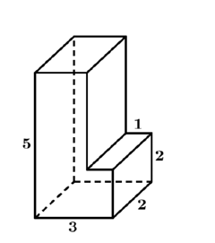
Задача 11
Найдите площадь поверхности многогранника, изображённого на рисунке (все двугранные углы — прямые).
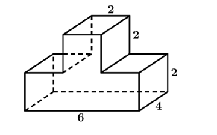
Задача 12
В кубе \(ABCDA_1B_1C_1D_1\) найдите угол между прямыми \(BC_1\) и \(A_1B_1\). Ответ дайте в градусах.
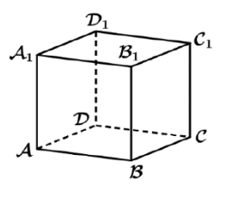
Задача 13
В кубе \(ABCDA_1B_1C_1D_1\) найдите угол между прямыми \(AC\) и \(BB_1\). Ответ дайте в градусах.
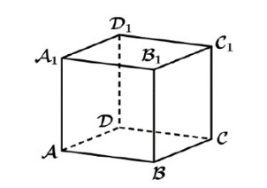
Задача 14
В кубе \(ABCDA_1B_1C_1D_1\) найдите угол между прямыми \(CB_1\) и \(AD\). Ответ дайте в градусах.
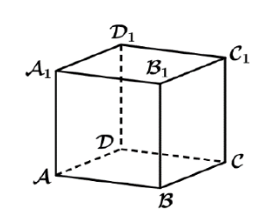
Задача 15
В кубе \(ABCDA_1B_1C_1D_1\) найдите угол между прямыми \(BD\) и \(A_1D_1\). Ответ дайте в градусах.
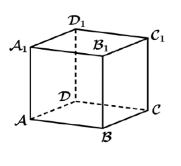
Задача 16
В кубе \(ABCDA_1B_1C_1D_1\) найдите угол между прямыми \(CD_1\) и \(BC_1\). Ответ дайте в градусах.
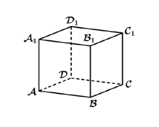
Задача 17
В правильной четырёхугольной призме \(ABCDA_1B_1C_1D_1\) известно, что \(BD_1 = 2AD\). Найдите угол между диагоналями \(DB_1\) и \(CA_1\). Ответ дайте в градусах.
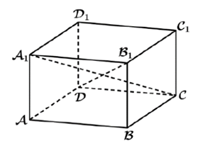
Задача 18
В правильной четырёхугольной призме \(ABCDA_1B_1C_1D_1\) известно, что \(D_1B = 2AB\). Найдите угол между диагоналями \(BD_1\) и \(CA_1\). Ответ дайте в градусах.
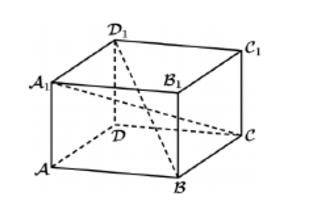
Задача 19
В прямоугольном параллелепипеде \(ABCDA_1B_1C_1D_1\) известны длины рёбер: \(AB = 6\), \(AD = 8\), \(AA_1 = 21\). Найдите синус угла между прямыми \(A_1D_1\) и \(AC\).
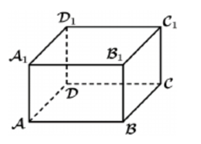
Задача 20
В прямоугольном параллелепипеде \(ABCDA_1B_1C_1D_1\) известны длины рёбер: \(AB = 28\), \(AD = 16\), \(AA_1 = 12\). Найдите синус угла между прямыми \(DD_1\) и \(B_1C\).
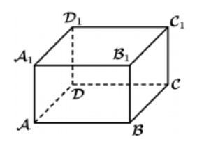
Задача 21
В прямоугольном параллелепипеде \(ABCDA_1B_1C_1D_1\) известны длины рёбер: \(AB = 9\), \(AD = 12\), \(AA_1 = 9\). Найдите синус угла между прямыми \(DD_1\) и \(B_1C\).
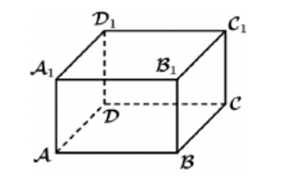
Задача 22
Найдите объем многогранника, изображённого на рисунке (все двугранные углы многогранника прямые).
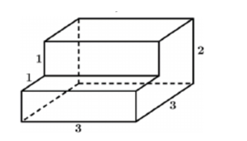
Задача 23
Найдите объем многогранника, изображённого на рисунке (все двугранные углы многогранника прямые).
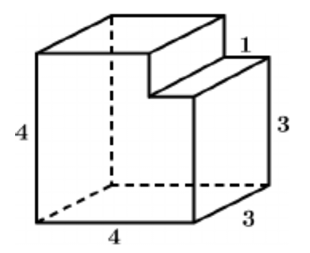
Задача 24
В прямоугольном параллелепипеде \(ABCDA_1B_1C_1D_1\) известно, что \(AB = 7\), \(BC = 6\), \(AA_1 = 5\). Найдите объём многогранника, вершинами которого являются точки \(A, B, C, A_1, B_1, C_1\).
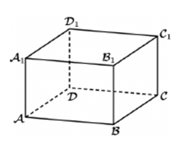
Задача 25
В прямоугольном параллелепипеде \(ABCDA_1B_1C_1D_1\) известно, что \(AB = 5\), \(BC = 4\), \(AA_1 = 3\). Найдите объём многогранника, вершинами которого являются точки \(A, B, C, D, A_1, B_1\).
Задача 26
Найдите объём многогранника, вершинами которого являются точки \(A, D_1, A_1, B, C_1, B_1\) прямоугольного параллелепипеда \(ABCDA_1B_1C_1D_1\), у которого \(AB = 4\), \(AD = 3\), \(AA_1 = 8\).
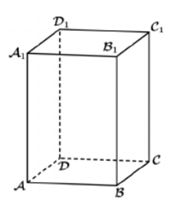
Задача 27
Объём треугольной призмы, отсекаемой от куба плоскостью, проходящей через середины двух рёбер, выходящих из одной вершины, и параллельной третьему ребру, выходящему из этой же вершины, равен 3,5. Найдите объём куба.
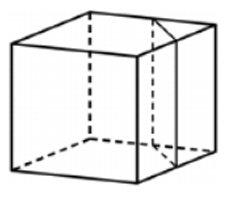
Задача 28
Объём куба равен 20. Найдите объём треугольной призмы, отсекаемой от него плоскостью, проходящей через середины двух рёбер, выходящих из одной вершины, и параллельной третьему ребру, выходящему из этой же вершины.
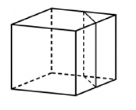
Задача 29
Объём куба равен 12. Найдите объём треугольной призмы, отсекаемой от него плоскостью, проходящей через середины двух рёбер, выходящих из одной вершины, и параллельной третьему ребру, выходящему из этой же вершины.
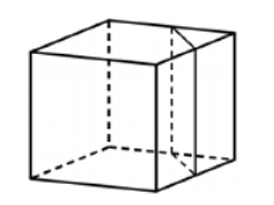
Задача 30
Найдите объём многогранника, вершинами которого являются вершины \(A, B, C, D, B_1\) прямоугольного параллелепипеда \(ABCDA_1B_1C_1D_1\), у которого \(AB = 9\), \(BC = 3\), \(BB_1 = 8\).
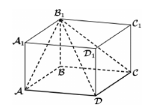
Задача 31
Найдите объём многогранника, вершинами которого являются вершины \(A, B, C, D, A_1\) прямоугольного параллелепипеда \(ABCDA_1B_1C_1D_1\), у которого \(AB = 7\), \(AD = 8\), \(AA_1 = 3\).
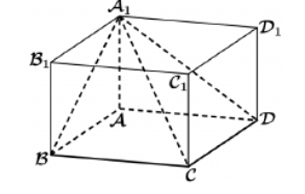
Задача 32
Дана правильная четырёхугольная призма \(ABCDA_1B_1C_1D_1\), площадь основания которой равна 6, а боковое ребро равно 6. Найдите объём многогранника, вершинами которого являются точки \(A, B, C, A_1, B_1\).
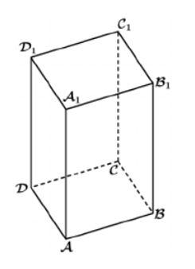
Задача 33
Дана правильная четырёхугольная призма \(ABCDA_1B_1C_1D_1\), площадь основания которой равна 5, а боковое ребро равно 9. Найдите объём многогранника, вершинами которого являются точки \(A, B, C, A_1, B_1\).
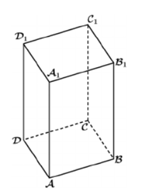
Задача 34
В прямоугольном параллелепипеде \(ABCDA_1B_1C_1D_1\) известно, что \(AB = 7\), \(BC = 6\), \(AA_1 = 5\). Найдите объём многогранника, вершинами которого являются точки \(A, B, C, B_1\).
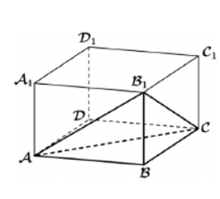
Задача 35
В прямоугольном параллелепипеде \(ABCDA_1B_1C_1D_1\) известно, что \(AB = 9\), \(BC = 6\), \(AA_1 = 5\). Найдите объём многогранника, вершинами которого являются точки \(A, B, C, B_1\).
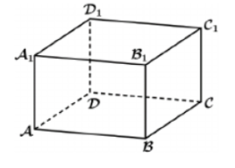
✍️ Практика: Призма
Реши задачу, введи ответ в поле и нажми «Проверить».
Задача 36
Основанием прямой треугольной призмы является прямоугольный треугольник с катетами 3 и 4, боковое ребро призмы равно 4. Найдите объём призмы.
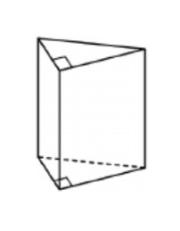
Задача 37
Основанием прямой треугольной призмы является прямоугольный треугольник с катетами 10 и 7, боковое ребро призмы равно 4. Найдите объём призмы.
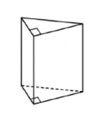
Задача 38
Основанием прямой треугольной призмы служит прямоугольный треугольник с катетами 5 и 6, объем призмы равен 75. Найдите ее боковое ребро.
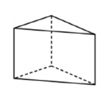
Задача 39
Основанием прямой треугольной призмы служит прямоугольный треугольник с катетами 7 и 6, объем призмы равен 63. Найдите ее боковое ребро.
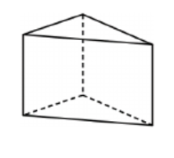
Задача 40
В правильной треугольной призме \(ABCA_1B_1C_1\), все рёбра которой равны 2, найдите угол между прямыми \(BB_1\) и \(AC_1\). Ответ дайте в градусах.
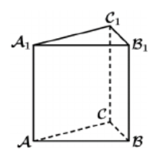
Задача 41
В правильной треугольной призме \(ABCA_1B_1C_1\), все рёбра которой равны 2, найдите угол между прямыми \(BB_1\) и \(AC\). Ответ дайте в градусах.
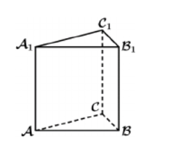
Задача 42
Площадь боковой поверхности треугольной призмы равна 47. Через среднюю линию основания призмы проведена плоскость, параллельная боковому ребру. Найдите площадь боковой поверхности отсечённой треугольной призмы.
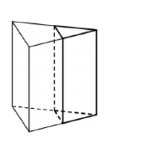
Задача 43
Площадь боковой поверхности треугольной призмы равна 24. Через среднюю линию основания призмы проведена плоскость, параллельная боковому ребру. Найдите площадь боковой поверхности отсечённой треугольной призмы.
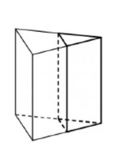
Задача 44
Через среднюю линию основания треугольной призмы проведена плоскость, параллельная боковому ребру. Площадь боковой поверхности отсечённой треугольной призмы равна 43. Найдите площадь боковой поверхности исходной призмы.
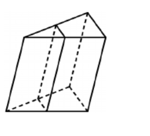
Задача 45
Через среднюю линию основания треугольной призмы проведена плоскость, параллельная боковому ребру. Площадь боковой поверхности отсечённой треугольной призмы равна 22. Найдите площадь боковой поверхности исходной призмы.
Задача 46
Через среднюю линию основания треугольной призмы, объём которой равен 52, проведена плоскость, параллельная боковому ребру. Найдите объём отсечённой треугольной призмы.
Задача 47
Через среднюю линию основания треугольной призмы, объём которой равен 56, проведена плоскость, параллельная боковому ребру. Найдите объём отсечённой треугольной призмы.
Задача 48
Через среднюю линию основания треугольной призмы проведена плоскость, параллельная боковому ребру. Найдите объём этой призмы, если объём отсечённой треугольной призмы равен 5.
Задача 49
Через среднюю линию основания треугольной призмы проведена плоскость, параллельная боковому ребру. Найдите объём этой призмы, если объём отсечённой треугольной призмы равен 12.
Задача 50
Найдите объём многогранника, вершинами которого являются вершины \(A, B, C, C_1\) правильной треугольной призмы \(ABCA_1B_1C_1\), площадь основания которой равна 7, а боковое ребро равно 9.
Задача 51
Найдите объём многогранника, вершинами которого являются точки \(A, B, C, B_1\) правильной треугольной призмы \(ABCA_1B_1C_1\), площадь основания которой равна 7, а боковое ребро равно 3.
Задача 52
Найдите объём многогранника, вершинами которого являются точки \(A, A_1, B_1, C_1\) правильной треугольной призмы \(ABCA_1B_1C_1\), площадь основания которой равна 3, а боковое ребро равно 2.
Задача 53
Найдите объём многогранника, вершинами которого являются точки \(B, A_1, B_1, C_1\) правильной треугольной призмы \(ABCA_1B_1C_1\), площадь основания которой равна 9, а боковое ребро равно 8.
Задача 54
Дана правильная треугольная призма \(ABCA_1B_1C_1\), площадь основания которой равна 7, а боковое ребро равно 9. Найдите объём многогранника, вершинами которого являются точки \(A, C, A_1, B_1, C_1\).
Задача 55
Дана правильная треугольная призма \(ABCA_1B_1C_1\), площадь основания которой равна 9, а боковое ребро равно 5. Найдите объём многогранника, вершинами которого являются точки \(B, C, A_1, B_1, C_1\).
Задача 56
Найдите объём многогранника, вершинами которого являются вершины \(A, C, A_1, B_1\) правильной треугольной призмы \(ABCA_1B_1C_1\). Площадь основания призмы равна 8, а боковое ребро равно 6.
Задача 57
Найдите объём многогранника, вершинами которого являются вершины \(A, C, B_1, C_1\) правильной треугольной призмы \(ABCA_1B_1C_1\). Площадь основания призмы равна 7, а боковое ребро равно 9.
Задача 58
В правильной шестиугольной призме \(ABCDEFA_1B_1C_1D_1E_1F_1\), все рёбра которой равны 3, найдите угол между прямыми \(CD\) и \(E_1F_1\). Ответ дайте в градусах.
Задача 59
В правильной шестиугольной призме \(ABCDEFA_1B_1C_1D_1E_1F_1\), все рёбра которой равны 4, найдите угол между прямыми \(BC\) и \(B_1F_1\). Ответ дайте в градусах.
Задача 60
Найдите объём многогранника, вершинами которого являются точки \(A, E, F, A_1, E_1, F_1\) правильной шестиугольной призмы \(ABCDEFA_1B_1C_1D_1E_1F_1\), площадь основания которой равна 12, а боковое ребро равно 13.
Задача 61
Найдите объём многогранника, вершинами которого являются точки \(D, E, F, D_1, E_1, F_1\) правильной шестиугольной призмы \(ABCDEFA_1B_1C_1D_1E_1F_1\), площадь основания которой равна 8, а боковое ребро равно 9.
Задача 62
Найдите объём многогранника, вершинами которого являются вершины \(A, B, D, E, A_1, B_1, D_1, E_1\) правильной шестиугольной призмы \(ABCDEFA_1B_1C_1D_1E_1F_1\), площадь основания которой равна 7, а боковое ребро равно 15.
Задача 63
Найдите объём многогранника, вершинами которого являются точки \(D, A_1, B_1, C_1, D_1, E_1, F_1\) правильной шестиугольной призмы \(ABCDEFA_1B_1C_1D_1E_1F_1\), площадь основания которой равна 12, а боковое ребро равно 2.
Задача 64
Найдите объём многогранника, вершинами которого являются точки \(A, B, C, D, E, F, D_1\) правильной шестиугольной призмы \(ABCDEFA_1B_1C_1D_1E_1F_1\), площадь основания которой равна 10, а боковое ребро равно 6.
Задача 65
Найдите объём многогранника, вершинами которого являются вершины \(C, D, E, D_1\) правильной шестиугольной призмы \(ABCDEFA_1B_1C_1D_1E_1F_1\), площадь основания которой равна 9, а боковое ребро равно 6.
✍️ Практика: Пирамида
Реши задачу, введи ответ в поле и нажми «Проверить».
Задача 66
В правильной четырёхугольной пирамиде \(SABCD\) с вершиной \(S\) точка \(O\) – центр основания, \(SA=34\), \(AC=32\). Найдите длину отрезка \(SO\).
Задача 67
В правильной четырёхугольной пирамиде \(SABCD\) с вершиной \(S\) точка \(O\) – центр основания, \(SD=26\), \(AC=20\). Найдите длину отрезка \(SO\).
Задача 68
В правильной четырёхугольной пирамиде \(SABCD\) с вершиной \(S\) точка \(O\) – центр основания, \(SO=15\), \(BD=40\). Найдите длину отрезка \(SA\).
Задача 69
В правильной четырёхугольной пирамиде \(SABCD\) с вершиной \(S\) точка \(O\) – центр основания, \(SO=30\), \(SA=34\). Найдите длину отрезка \(AC\).
Задача 70
В правильной четырёхугольной пирамиде \(SABCD\) точка \(O\) – центр основания, \(S\) – вершина, \(SO=48\), \(SC=80\). Найдите длину отрезка \(BD\).
Задача 71
В правильной четырёхугольной пирамиде боковое ребро равно 4,5, а сторона основания равна 6. Найдите высоту пирамиды.
Задача 72
В правильной четырёхугольной пирамиде все рёбра равны 6. Найдите площадь сечения пирамиды плоскостью, проходящей через середины боковых рёбер.
Задача 73
В правильной четырёхугольной пирамиде все рёбра равны 10. Найдите площадь сечения пирамиды плоскостью, проходящей через середины боковых рёбер.
Задача 74
В правильной четырёхугольной пирамиде высота равна 2, боковое ребро равно 4. Найдите её объём.
Задача 75
В правильной четырёхугольной пирамиде высота равна 3, боковое ребро равно 4. Найдите её объём.
Задача 76
В правильной четырёхугольной пирамиде \(SABCD\) с основанием \(ABCD\) боковое ребро \(SC\) равно 17, сторона основания равна \(15\sqrt{2}\). Найдите объём пирамиды.
Задача 77
В правильной четырёхугольной пирамиде \(SABCD\) с основанием \(ABCD\) боковое ребро \(SC\) равно 26, сторона основания равна \(10\sqrt{2}\). Найдите объём пирамиды.
Задача 78
Объём правильной четырёхугольной пирамиды \(SABCD\) равен 152. Точка \(E\) – середина ребра \(SB\). Найдите объём треугольной пирамиды \(EABC\).
Задача 79
Объём правильной четырёхугольной пирамиды \(SABCD\) равен 88. Точка \(E\) – середина ребра \(SB\). Найдите объём треугольной пирамиды \(EABC\).
Задача 80
Стороны основания правильной четырёхугольной пирамиды равны 16, боковые рёбра равны 17. Найдите площадь поверхности этой пирамиды.
Задача 81
Стороны основания правильной четырёхугольной пирамиды равны 14, боковые рёбра равны 25. Найдите площадь поверхности этой пирамиды.
Задача 82
В правильной треугольной пирамиде боковое ребро равно 3, а сторона основания равна 4,5. Найдите высоту пирамиды.
Задача 83
Объём треугольной пирамиды равен 94. Через вершину пирамиды и среднюю линию её основания проведена плоскость. Найдите объём отсечённой треугольной пирамиды.
Задача 84
Объём треугольной пирамиды равен 82. Через вершину пирамиды и среднюю линию её основания проведена плоскость. Найдите объём отсечённой треугольной пирамиды.
Задача 85
В правильной шестиугольной пирамиде боковое ребро равно 7,4, а сторона основания равна 2,4. Найдите высоту пирамиды.
Задача 86
В правильной шестиугольной пирамиде боковое ребро равно 4,1, а сторона основания равна 4. Найдите высоту пирамиды.
✍️ Практика: Конус
Реши задачу, введи ответ в поле и нажми «Проверить».
Задача 87
Высота конуса равна 16, а диаметр основания равен 60. Найдите длину образующей конуса.
Задача 88
Высота конуса равна 5, а диаметр основания равен 24. Найдите длину образующей конуса.
Задача 89
Высота конуса равна 21, а длина образующей равна 29. Найдите диаметр основания конуса.
Задача 90
Высота конуса равна 24, а длина образующей равна 25. Найдите диаметр основания конуса.
Задача 91
Диаметр основания конуса равен 14, а длина образующей — 25. Найдите высоту конуса.
Задача 92
Диаметр основания конуса равен 18, а длина образующей — 41. Найдите высоту конуса.
Задача 93
Диаметр основания конуса равен 90, а длина образующей — 51. Найдите площадь осевого сечения этого конуса.
Задача 94
Диаметр основания конуса равен 120, а длина образующей — 65. Найдите площадь осевого сечения этого конуса.
Задача 95
Высота конуса равна 20, а длина образующей — 29. Найдите площадь осевого сечения этого конуса.
Задача 96
Высота конуса равна 33, а длина образующей — 55. Найдите площадь осевого сечения этого конуса.
Задача 97
Площадь основания конуса равна \(36\pi\), высота — 10. Найдите площадь осевого сечения этого конуса.
Задача 98
Площадь основания конуса равна \(25\pi\), высота — 8. Найдите площадь осевого сечения этого конуса.
Задача 99
Площадь основания конуса равна 72. Плоскость, параллельная плоскости основания конуса, делит его высоту на отрезки длиной 6 и 12, считая от вершины. Найдите площадь сечения конуса этой плоскостью.
Задача 100
Площадь основания конуса равна 49. Плоскость, параллельная плоскости основания конуса, делит его высоту на отрезки длиной 2 и 12, считая от вершины. Найдите площадь сечения конуса этой плоскостью.
Задача 101
Во сколько раз увеличится объём конуса, если радиус его основания увеличить в 5 раз, а высоту оставить прежней?
Задача 102
Во сколько раз увеличится объём конуса, если радиус его основания увеличить в 6 раз, а высоту оставить прежней?
Задача 103
Во сколько раз уменьшится объём конуса, если его высота уменьшится в 9 раз, а радиус основания останется прежним?
Задача 104
Во сколько раз уменьшится объём конуса, если его высота уменьшится в 8 раз, а радиус основания останется прежним?
Задача 105
В сосуде, имеющем форму конуса, уровень жидкости достигает 1/2 высоты. Объём жидкости равен 25 мл. Сколько миллилитров жидкости нужно долить, чтобы полностью наполнить сосуд?
Задача 106
В сосуде, имеющем форму конуса, уровень жидкости достигает 2/3 высоты. Объём жидкости равен 144 мл. Сколько миллилитров жидкости нужно долить, чтобы полностью наполнить сосуд?
Задача 107
Через точку, лежащую на высоте кругового конуса и делящую её в отношении 1:2, считая от вершины конуса, проведена плоскость, параллельная его основанию и делящая конус на две части. Каков объем той части конуса, которая примыкает к его основанию, если объём всего конуса равен 405?
Задача 108
Через точку, лежащую на высоте кругового конуса и делящую её в отношении 1:5, считая от вершины конуса, проведена плоскость, параллельная его основанию и делящая конус на две части. Каков объем той части конуса, которая примыкает к его основанию, если объём всего конуса равен 216?
Задача 109
Площадь полной поверхности конуса равна 32,5. Параллельно основанию конуса проведено сечение, делящее высоту в отношении 4:1, считая от вершины конуса. Найдите площадь полной поверхности отсечённого конуса.
Задача 110
Площадь полной поверхности конуса равна 27,2. Параллельно основанию конуса проведено сечение, делящее высоту в отношении 1:3, считая от вершины конуса. Найдите площадь полной поверхности отсечённого конуса.
✍️ Практика: Цилиндр
Реши задачу, введи ответ в поле и нажми «Проверить».
Задача 111
Площадь боковой поверхности цилиндра равна \(40\pi\), а высота равна 10. Найдите диаметр основания.
Задача 112
Площадь боковой поверхности цилиндра равна \(35\pi\), а высота равна 7. Найдите диаметр основания.
Задача 113
Площадь боковой поверхности цилиндра равна \(24\pi\), а диаметр основания равен 8. Найдите высоту цилиндра.
Задача 114
Площадь боковой поверхности цилиндра равна \(16\pi\), а диаметр основания равен 4. Найдите высоту цилиндра.
Задача 115
В цилиндрический сосуд налили 1200 см³ воды. Уровень жидкости оказался равным 12 см. В воду полностью погрузили деталь. При этом уровень жидкости в сосуде поднялся на 10 см. Найдите объём детали. Ответ выразите в см³.
Задача 116
В цилиндрический сосуд налили 1400 см³ воды. Уровень воды оказался равным 10 см. В воду полностью погрузили деталь. При этом уровень воды в сосуде поднялся на 4 см. Найдите объём детали. Ответ дайте в см³.
Задача 117
В цилиндрический сосуд налили 700 см³ воды. В воду полностью погрузили деталь. При этом уровень жидкости в сосуде увеличился в 1,4 раза. Найдите объём детали. Ответ выразите в см³.
Задача 118
В цилиндрический сосуд, в котором находится 4 дм³ воды, опустили деталь. При этом уровень жидкости в сосуде поднялся в 2,5 раза. Чему равен объём детали? Ответ выразите в дм³.
Задача 119
В цилиндрический сосуд, в котором находится 5 дм³ воды, опустили деталь. При этом уровень жидкости в сосуде поднялся в 1,8 раза. Чему равен объём детали? Ответ выразите в дм³.
Задача 120
В цилиндрическом сосуде уровень жидкости достигает 147 см. На какой высоте будет находиться уровень жидкости, если её перелить во второй цилиндрический сосуд, диаметр которого в 7 раз больше диаметра первого? Ответ выразите в сантиметрах.
Задача 121
В цилиндрическом сосуде уровень жидкости достигает 150 см. На какой высоте будет находиться уровень жидкости, если её перелить во второй цилиндрический сосуд, диаметр которого в 5 раз больше диаметра первого? Ответ выразите в сантиметрах.
Задача 122
В цилиндрическом сосуде уровень жидкости достигает 5 см. На какой высоте будет находиться уровень жидкости, если её перелить во второй цилиндрический сосуд, диаметр которого в 3 раза меньше диаметра первого? Ответ выразите в сантиметрах.
Задача 123
В цилиндрическом сосуде уровень жидкости достигает 3 см. На какой высоте будет находиться уровень жидкости, если её перелить во второй цилиндрический сосуд, диаметр которого в 4 раза меньше диаметра первого? Ответ выразите в сантиметрах.
Задача 124
Дано два цилиндра. Объём первого цилиндра равен 20. У второго цилиндра высота в 4 раза меньше, а радиус основания в 3 раза больше, чем у первого. Найдите объём второго цилиндра.
Задача 125
Дано два цилиндра. Объём первого цилиндра равен 16. У второго цилиндра высота в 2 раза меньше, а радиус основания в 2 раза больше, чем у первого. Найдите объём второго цилиндра.
Задача 126
Первая цилиндрическая кружка вдвое выше второй, а вторая в четыре раза шире первой. Найдите отношение объёма второй кружки к объёму первой.
Задача 127
Первая цилиндрическая кружка в полтора раза выше второй, а вторая в три раза шире первой. Найдите отношение объёма второй кружки к объёму первой.
✍️ Практика: Шар
Реши задачу, введи ответ в поле и нажми «Проверить».
Задача 128
Площадь сечения шара плоскостью, проходящей через центр шара, равна 22. Найдите площадь поверхности шара.
Задача 129
Площадь сечения шара плоскостью, проходящей через центр шара, равна 30. Найдите площадь поверхности шара.
Задача 130
Радиусы двух шаров равны 16 и 30. Найдите радиус шара, площадь поверхности которого равна сумме площадей поверхностей двух данных шаров.
Задача 131
Радиусы двух шаров равны 21 и 72. Найдите радиус шара, площадь поверхности которого равна сумме площадей поверхностей двух данных шаров.
Задача 132
Дано два шара. Радиус первого шара в 3 раза больше радиуса второго. Во сколько раз площадь поверхности первого шара больше площади поверхности второго?
Задача 133
Дано два шара. Радиус первого шара в 7 раз больше радиуса второго. Во сколько раз площадь поверхности первого шара больше площади поверхности второго?
Задача 134
Дано два шара. Радиус первого шара в 6 раз больше радиуса второго. Во сколько раз объем первого шара больше объема второго?
Задача 135
Дано два шара. Радиус первого шара в 8 раз больше радиуса второго. Во сколько раз объем первого шара больше объема второго?
✍️ Практика: Вписанные и описанные тела
Реши задачу, введи ответ в поле и нажми «Проверить».
Задача 136
Прямоугольный параллелепипед описан около цилиндра, радиус основания и высота которого равны 4. Найдите объём параллелепипеда.
Задача 137
Цилиндр вписан в прямоугольный параллелепипед. Радиус основания и высота цилиндра равны 2,5. Найдите объём параллелепипеда.
Задача 138
Прямоугольный параллелепипед описан около цилиндра, радиус основания которого равен 4. Объем параллелепипеда равен 96. Найдите высоту цилиндра.
Задача 139
Прямоугольный параллелепипед описан около цилиндра, радиус основания которого равен 8. Объем параллелепипеда равен 102,4. Найдите высоту цилиндра.
Задача 140
В основании прямой призмы лежит прямоугольный треугольник с катетами 1 и 8. Боковые рёбра призмы равны \(\frac{6}{\pi}\). Найдите объем цилиндра, описанного около этой призмы.
Задача 141
В основании прямой призмы лежит прямоугольный треугольник с катетами 7 и 24. Боковые рёбра призмы равны \(\frac{8}{\pi}\). Найдите объем цилиндра, описанного около этой призмы.
Задача 142
Цилиндр и конус имеют общие основание и высоту. Объём цилиндра равен 252. Найдите объём конуса.
Задача 143
Цилиндр и конус имеют общие основание и высоту. Объём цилиндра равен 18. Найдите объём конуса.
Задача 144
Цилиндр и конус имеют общие основание и высоту. Объём конуса равен 36. Найдите объём цилиндра.
Задача 145
Цилиндр и конус имеют общие основание и высоту. Объём конуса равен 48. Найдите объём цилиндра.
Задача 146
Цилиндр и конус имеют общие основание и высоту. Высота цилиндра равна радиусу основания. Площадь боковой поверхности конуса равна \(7\sqrt{2}\). Найдите площадь боковой поверхности цилиндра.
Задача 147
Цилиндр и конус имеют общие основание и высоту. Высота цилиндра равна радиусу основания. Площадь боковой поверхности конуса равна \(6\sqrt{2}\). Найдите площадь боковой поверхности цилиндра.
Задача 148
Цилиндр и конус имеют общие основание и высоту. Высота цилиндра равна радиусу основания. Площадь боковой поверхности цилиндра равна \(11\sqrt{2}\). Найдите площадь боковой поверхности конуса.
Задача 149
Цилиндр и конус имеют общие основание и высоту. Высота цилиндра равна радиусу основания. Площадь боковой поверхности цилиндра равна \(8\sqrt{2}\). Найдите площадь боковой поверхности конуса.
✍️ Практика: Комбинации с шаром
Реши задачу, введи ответ в поле и нажми «Проверить».
Задача 150
В куб с ребром 9 вписан шар. Найдите объём этого шара, делённый на \(\pi\).
Задача 151
В куб с ребром 18 вписан шар. Найдите объём этого шара, делённый на \(\pi\).
Задача 152
Куб описан около сферы радиуса 4. Найдите объём куба.
Задача 153
Куб описан около сферы радиуса 5. Найдите объём куба.
Задача 154
Прямоугольный параллелепипед описан около сферы радиуса 8,5. Найдите его объём.
Задача 155
Прямоугольный параллелепипед описан около сферы радиуса 17. Найдите его объём.
Задача 156
Шар вписан в цилиндр. Площадь поверхности шара равна 21. Найдите площадь полной поверхности цилиндра.
Задача 157
Шар вписан в цилиндр. Площадь поверхности шара равна 56. Найдите площадь полной поверхности цилиндра.
Задача 158
Шар вписан в цилиндр. Площадь полной поверхности цилиндра равна 42. Найдите площадь поверхности шара.
Задача 159
Шар вписан в цилиндр. Площадь полной поверхности цилиндра равна 18. Найдите площадь поверхности шара.
Задача 160
Шар, объём которого равен 62, вписан в цилиндр. Найдите объём цилиндра.
Задача 161
Шар, объём которого равен 22, вписан в цилиндр. Найдите объём цилиндра.
Задача 162
Цилиндр, объём которого равен 18, описан около шара. Найдите объём шара.
Задача 163
Цилиндр, объём которого равен 48, описан около шара. Найдите объём шара.
Задача 164
Около конуса описана сфера. Центр сферы совпадает с центром основания конуса. Радиус сферы равен \(10\sqrt{2}\). Найдите образующую конуса.
Задача 165
Около конуса описана сфера. Центр сферы совпадает с центром основания конуса. Радиус сферы равен \(31\sqrt{2}\). Найдите образующую конуса.
Задача 166
Около конуса описана сфера. Центр сферы совпадает с центром основания конуса. Образующая конуса равна \(36\sqrt{2}\). Найдите радиус сферы.
Задача 167
Около конуса описана сфера. Центр сферы совпадает с центром основания конуса. Образующая конуса равна \(94\sqrt{2}\). Найдите радиус сферы.
Задача 168
Конус вписан в шар. Радиус основания конуса равен радиусу шара. Объём конуса равен 20. Найдите объём шара.
Задача 169
Конус вписан в шар. Радиус основания конуса равен радиусу шара. Объём конуса равен 48. Найдите объём шара.
Задача 170
Конус вписан в шар. Радиус основания конуса равен радиусу шара. Объём шара равен 36. Найдите объём конуса.
Задача 171
Конус вписан в шар. Радиус основания конуса равен радиусу шара. Объём шара равен 60. Найдите объём конуса.